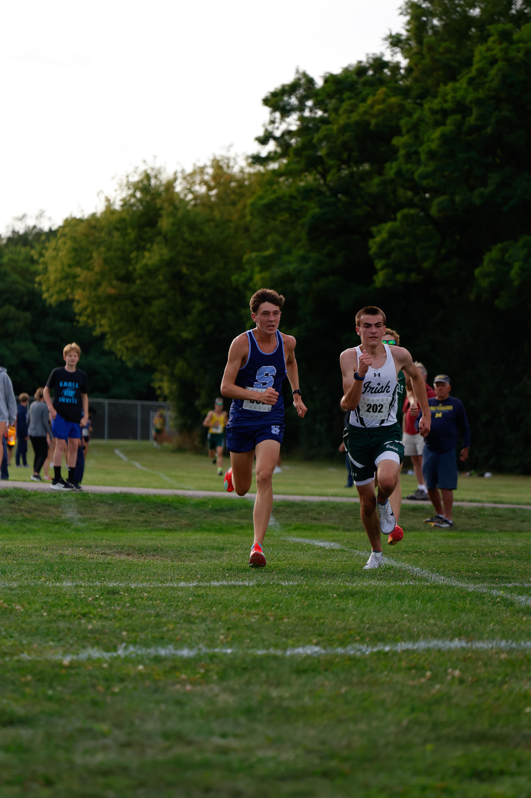

Garrett Comer
Personal record
16:42
About
Garrett is a junior on the skyline xc team. After a mediocre freshman year and a devestating season lasting injury his sophmore year, Garrett was more determended than ever to run well. He was one of the most consistant runners on the team getting that top 7 spot on the team every single race. He excelled in not just running but motivating, by always leading cheers and getting everyone hyped up while still staying positive. His favroite memories of the team was being at camp with everyone and playing games all day while still being full of energy. His favroite race was at holly when their team placed first and went up on stage togerther with a big trophie.
Season summary
Total meets: 8
Best time: 16:42
Career results
| Meet Name | Date | Level | Time | Place |
|---|---|---|---|---|
| Early Season Invite | 2025-09-07 | V | 17:10 | 12 |
| County Championship | 2025-10-05 | V | 16:42 | 2 |
| Regional Finals | 2025-10-19 | JV | 16:55 | 5 |
Gallery

